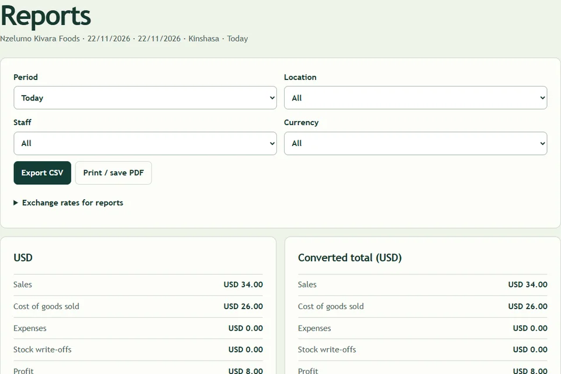

Flagship · in development
OpenDuka
A business-systems project focused on the records visible in a trading-day reports screen. Hosting, security and production readiness remain unverified.
Review OpenDuka evidence
Our work
OpenDuka is the flagship product in development. Other browser tools and concepts use synthetic information and are not client case studies.

These demonstrate interaction or visual direction with sample data. They do not prove client results or production readiness.
Local inventory records and exports on one device, with its limits shown in the tool.
Open StockroomA fictional catalogue and basket interaction. No checkout, payment or order delivery.
View conceptA scripted response and handover demonstration using approved sample answers.
View demoLocal demonstrations for review steps and campaign link preparation.
View workflow demo